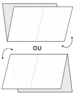
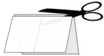
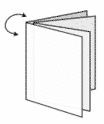

Castor veut créer un livret de 8 pages à partir d'une seule feuille de papier.
Il a l'idée d'imprimer 4 pages sur chaque face de la feuille. Ensuite, la feuille devra être pliée deux fois puis coupée, de telle sorte qu'une fois les morceaux assemblés, les pages soient dans le bon ordre, pour lire le livret en le feuilletant.
1. 2.  3.  4. 
Castor doit bien réfléchir à la répartition des pages imprimées sur la feuille de papier. On appelle recto la face avant d'une feuille et verso la face arrière.
Castor hésite parmi 4 répartitions possibles des pages sur la feuille. Les modèles d'impression ci-dessous donnent les numéros des pages imprimées sur le recto de la feuille pour les quatre solutions. On ne voit pas le verso. Pourtant on devine déjà que l'une des solutions ne marchera pas quelle que soit la manière dont on plie et découpe la feuille. Laquelle ?
Une méthode consiste à tester chaque solution, éventuellement en manipulant des feuilles de papier, sur lesquelles on reporte les numéros de s pages. Pour se rendre compte que :
Lorsque vient le moment d'imprimer un document, il n'est pas toujours si simple de choisir les paramètrages d'impression que l'on souhaite (recto-verso, 2 pages par feuille, etc). De plus, le problème devient un casse-tête lorsqu'on prévoit de faire des pliages et des découpages pour obtenir le format désiré. Pour le cas présenté dans cet exercice, il est préférable de bien réfléchir à la question, si l'on veut éviter de devoir faire de nombreux essais.
En fait, c'est un casse-tête avec les progiciels de traitement de texte et les imprimantes ordinaires. Mais il existe des logiciel de PAO et des imprimantes plus perfectionnées qui prennent en charge le pliage et le découpage. Leurs interfaces permettent plus facilement de faire ces choix.